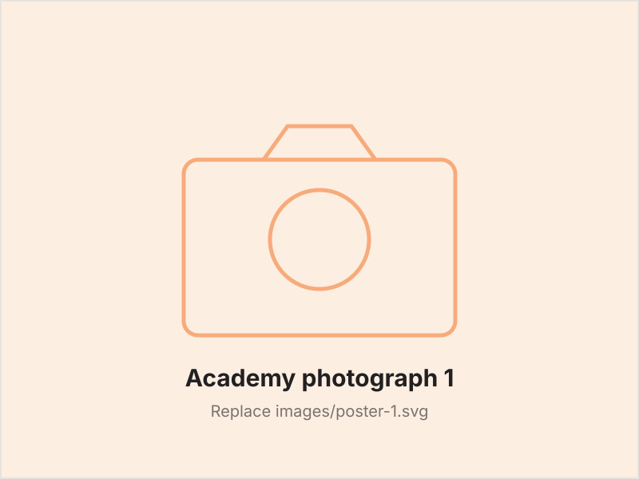
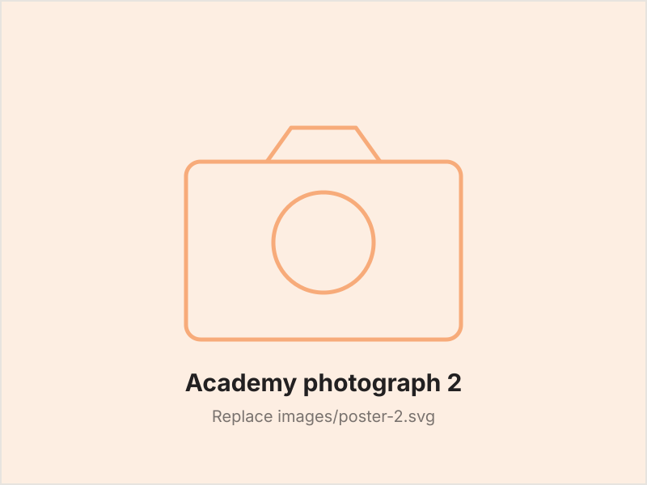

SPS Academy is our own training academy — open to you, funded by SPS, and delivered online so it fits around your work. AI is where we started, and the catalogue is growing well beyond it.
SAQA runs South Africa's National Qualifications Framework. QCTO designs and quality-assures occupational qualifications, and accredits the providers allowed to deliver them.
That chain is why an accredited certificate counts outside SPS too — with another employer, or towards further study. See which courses carry it
The registered project-management qualification — 240 credits at NQF Level 5, delivered online around your shift and assessed by Centenary Networks, the accredited provider. Register now to hold your place on this intake.
Our People, Our Greatest Asset.
SPS Academy exists because the people doing the work are what the company is built on — whatever the role, whatever the starting point.
Every course is fully funded by SPS and delivered online, so it fits around a shift and a site. What you come away with is yours to keep: an accredited qualification counts with another employer and towards further study, not only here.
Have a look through the courses, talk it over with your manager, and register your interest.
SPS Academy exists so all of us can keep pace — practical online training built around the work we actually do. No technical background required, whatever role you're in today.
The catalogue spans technical, business, compliance, safety and admin — so this isn't only for the people whose jobs already touch AI. Whatever you do here, there's something aimed at it.
Every course is grounded in the work we actually do — installations, field operations, sales and support — so what you learn this week you can use next week.
Study from any SPS site or from home. Flexible online delivery means no travel, no lost shifts, and training that fits around operational duties.
We're concentrating on the Project Manager qualification while its material is prepared, so that is the one open for enrolment right now — the rest are listed so you can see what's coming. If what you need isn't here yet, ask HR.
A practical introduction to AI for non-technical staff — what it is, how it works, and how to use everyday AI tools confidently and responsibly.
Hands-on training in the AI tools transforming day-to-day work — writing assistants, research tools, data tools, and workflow automation.
Using AI safely at work: data privacy, accuracy, bias, and the practical do's and don'ts of AI in a professional setting.
For SPS managers and team leads: spotting AI opportunities in your department, leading AI-enabled teams, and driving responsible adoption across the business.
The registered NQF 5 qualification — 240 credits across knowledge, practical and workplace modules. The formal route for anyone running projects at SPS.
The full technical qualification — computer systems, hardware and support, covered properly. The formal route for our technicians and field teams.
Two photographs from the academy belong here — an intake, a team, a site visit. Send them through and they go straight in.


Register your interest with HR and we'll confirm your place on the next intake.
Upskill Yourself